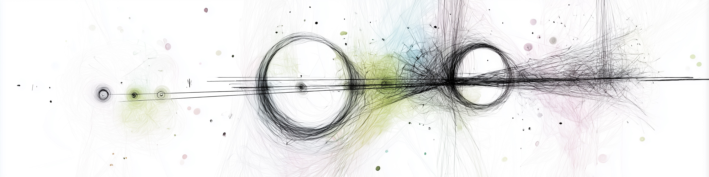
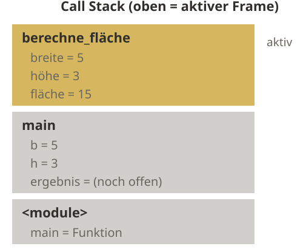
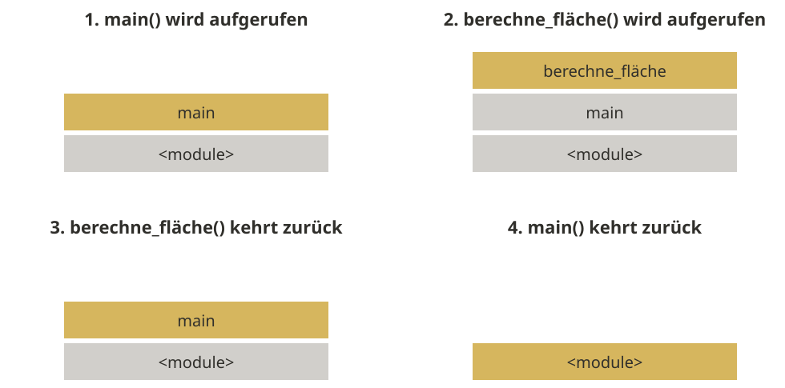

def funktionsname(argument1, argument2):
# Funktionskörper
print("Der Typ von Argument 1 ist "+str(type(argument1)))
print("Der Typ von Argument 2 ist "+str(type(argument2)))Funktionen

A function of good software is to make the complex appear simple.
— Grady Booch
TL;DR
In diesem Kapitel lernen wir Funktionen als zentrale Bausteine von Programmen kennen. Zunächst betrachten wir Funktionen allgemein: wie man sie in Python definiert und aufruft, wie sie Ergebnisse zurückgeben und welche Rolle Standardwerte und eingebaute Funktionen spielen. Danach betrachten wir Funktionen im Speicher, also Variablengültigkeit, Call Stack und die Frage, was mit übergebenen Argumenten geschieht. Zum Schluss lesen wir die Signatur als Vertrag zwischen Aufrufer und Funktion und nutzen sie beim agentischen Arbeiten mit KI-generiertem Code. Das Kapitel setzt Verzweigungen und Schleifen voraus; beides verwenden wir in den Beispielen.
Funktionen allgemein
Gründe für Funktionen
Stellen wir uns vor, wir werten Temperaturmessungen von mehreren Sensoren an einer Brücke aus und berechnen für jede Messreihe denselben Mittelwert. Ohne Funktionen schreiben wir die Berechnung für jede Reihe erneut hin. Wir müssten jede spätere Korrektur an allen Stellen nachziehen, und vergessene Stellen führen zu Fehlern, die schwer zu finden sind.
Eine Funktion fasst solche wiederkehrenden Schritte unter einem Namen zusammen. Die Berechnung steht dann nur einmal im Programm, und eine Änderung wirkt überall, wo die Funktion aufgerufen wird. Darüber hinaus zerlegen Funktionen eine komplexe Aufgabe in kleine, überschaubare Bausteine, die sich einzeln verstehen und prüfen lassen. Ein sprechender Name wie mittelwert macht außerdem sichtbar, was ein Codeabschnitt leistet, ohne dass wir seine Zeilen lesen müssen.
Funktionen in Mathematik und Programmierung
Der Begriff der Funktion stammt aus der Mathematik. Eine Funktion ordnet jedem Element der Definitionsmenge genau ein Element der Zielmenge zu, wie die folgende Definition festhält. Ein Beispiel aus dem Ingenieurwesen ist die Fläche eines Rechtecks: Aus Länge und Breite als Eingabe folgt eindeutig ein Flächenwert als Ausgabe.
Abbildung
Eine Funktion \(f\) ordnet jedem Element \(x\) einer Definitionsmenge \(X\) genau ein Element \(y\) einer Zielmenge \(Y\) zu. Mathematisch ist die Abbildung definiert als
\[ f : X \to Y, \quad x \mapsto y.\]
Meist schreibt man kurz
\[ y = f(x).\]
Funktionen in Python übernehmen dieses Prinzip: Aus dem Eingabewert \(x\) entsteht der Rückgabewert \(y = f(x)\). Anders als in der Mathematik können sie zusätzlich Seiteneffekte haben, etwa die Ausgabe mit print oder das Verändern der Eingabewerte, zum Beispiel bei einer übergebenen Liste (siehe unten).
Im Sinne der Programmierung ist eine Funktion wiederverwendbarer Programmcode, der eine bestimmte Aufgabe ausführt. Sie nimmt Eingabewerte entgegen und führt eine festgelegte Folge von Anweisungen aus. Dabei unterscheiden wir zwei Begriffe: Parameter sind die Namen, die in der Funktionsdefinition stehen; Argumente sind die Werte, die wir beim Aufruf übergeben. Am Ende gibt sie genau ein Objekt zurück, den Rückgabewert. Stehen hinter return mehrere durch Kommas getrennte Werte, bildet Python daraus ein Tupel; fehlt return, lautet der Rückgabewert None. Eine Funktion ohne Rückgabewert nennt man auch Prozedur.
Eine Funktion wird nur ausgeführt, wenn wir sie aufrufen. Die bloße Definition legt sie lediglich an. Name, Parameter und Rückgabe bilden zusammen die Signatur der Funktion; sie beschreibt, was die Funktion verspricht, noch bevor wir ihre Implementierung lesen. Darauf kommen wir im Abschnitt zur Signatur als Vertrag zurück.
Funktionsdefinition und Funktionsaufruf
Alle höheren Programmiersprachen erlauben die Definition von Funktionen oder Prozeduren. Wir betrachten nun, wie das in Python aussieht.
Funktionen werden in Python mit dem Schlüsselwort def definiert. Sie haben einen Namen und können mehrere Parameter als Eingabe in einer Klammer haben. Der Funktionskopf endet mit :. Der Körper der Funktion, also der Teil, der beim Aufruf ausgeführt wird, muss immer eingerückt werden.
Hierbei müssen alle Teile der Funktion gleich eingerückt werden. Der folgende Code ist z. B. syntaktisch falsch:
def funktionsname(argument1, argument2):
# Funktionskörper
print("Der Typ von Argument 1 ist "+str(type(argument1)))
print("Der Typ von Argument 2 ist "+str(type(argument2)))Cell In[2], line 4 print("Der Typ von Argument 2 ist "+str(type(argument2))) ^ IndentationError: unexpected indent
Python bricht hier mit einem IndentationError ab, noch bevor die Funktion definiert wird.
Beim Aufruf funktionsname(wert1, wert2) werden die Parameter mit den übergebenen Argumenten belegt. Parameter werden in Python wie andere Variablen dynamisch typisiert: Wir wissen nicht, welchen Typ sie später haben. Das ist eine typische Fehlerquelle.
funktionsname("wert1", 2)Der Typ von Argument 1 ist <class 'str'>
Der Typ von Argument 2 ist <class 'int'>Das Entscheidende ist, dass die Parameter bei jedem Aufruf andere Werte erhalten.
funktionsname("anderer wert ", "noch ein anderer")Der Typ von Argument 1 ist <class 'str'>
Der Typ von Argument 2 ist <class 'str'>Beispiel: Mittelwert einer Messreihe
Ein typischer Fall aus der Auswertung von Messdaten ist der Mittelwert. Berechnen wir ihn direkt, steht die Schleife, die eine Messreihe aufsummiert und durch die Anzahl der Werte teilt, für jede Reihe erneut im Programm. Kapseln wir dieselbe Schleife in der Funktion mittelwert(werte), genügt ein Aufruf je Reihe. Der Parameter werte erhält bei jedem Aufruf eine andere Messreihe, die Rechenvorschrift bleibt gleich.
def mittelwert(werte):
summe = 0
for wert in werte:
summe += wert
return summe / len(werte)mittelwert([12.1, 13.4, 11.8, 14.0])12.825mittelwert([9.5, 10.2, 8.9])9.533333333333333Für die erste Reihe ergibt sich 12,825, für die zweite etwa 9,53. Würden wir die Berechnung später ändern, etwa um leere Reihen abzufangen, müssten wir dies nur an einer Stelle tun.
Beispiel: Euklidische Distanz
Auch geometrische Berechnungen lassen sich als Funktion schreiben. Die Funktion distance berechnet die euklidische Distanz zweier Punkte \((a_1, a_2)\) und \((b_1, b_2)\) nach \(\sqrt{(a_1-b_1)^2 + (a_2-b_2)^2}\) und gibt das Ergebnis mit return zurück. Der Rückgabewert ersetzt den Aufruf im Ausdruck.
from math import sqrt
def distance(a1, a2, b1, b2):
return sqrt((a1 - b1)**2 + (a2 - b2)**2)distance(2, 3, 6, 6)5.0Für die Punkte (2, 3) und (6, 6) ergibt sich 5,0, denn die Katheten des Dreiecks sind 4 und 3 lang.
Ergebnisrückgabe
Die Anweisung return beendet die Ausführung einer Funktion und gibt den angegebenen Wert an den Aufrufer zurück.
def funktion_mit_einer_ausgabe():
return "Ausgabewert"
print("Dieser Teil wird nicht ausgeführt")
return "Anderer Ausgabewert"ergebnis = funktion_mit_einer_ausgabe()
ergebnis'Ausgabewert'Wir sehen, dass das Ergebnis Ausgabewert ist und die print()-Funktion nicht aufgerufen worden ist. Hat eine Funktion kein return, liefert sie None, auch wenn sie mit print etwas ausgibt.
Eine Funktion kann mit return auch mehrere Werte zurückgeben.
def funktion_mit_zwei_ausgaben():
return "Ausgabewert1", "Ausgabewert2"ergebnis = funktion_mit_zwei_ausgaben()
ergebnis('Ausgabewert1', 'Ausgabewert2')Das Ergebnis einer Funktion mit mehreren Rückgabewerten ist ein Tupel.
type(ergebnis)tupleAuf die einzelnen Werte im Tupel kann durch den Index zugegriffen werden. Zur Erinnerung: Der Index einer Liste oder eines Tupels beginnt bei 0.
ergebnis[0]'Ausgabewert1'Mit einer Mehrfachzuweisung (Tupel-Unpacking) verteilen wir die Elemente des Tupels direkt auf mehrere Variablen. Dazu listen wir links von der Zuweisung mehrere durch Kommas getrennte Variablen auf.
ergebnis1, ergebnis2 = funktion_mit_zwei_ausgaben()ergebnis1'Ausgabewert1'ergebnis2'Ausgabewert2'type(ergebnis1)strRückgabe und Ausgabe sind verschieden
Ein häufiger Irrtum ist, print und return gleichzusetzen. Mit print zeigen wir einen Wert nur auf dem Bildschirm an; mit return geben wir ihn an den Aufrufer weiter, der damit weiterrechnen kann. Der Rückgabewert ersetzt den Funktionsaufruf im ursprünglichen Ausdruck, sodass x = verdopple(3) dasselbe bedeutet wie x = 6.
def verdopple(a):
return a * 2 # liefert den Wert zurück
def zeige_doppelt(a):
print(a * 2) # nur Ausgabe, kein returnverdopple(3)6print(zeige_doppelt(3))6
NoneDie Funktion zeige_doppelt gibt zwar 6 aus, liefert aber keinen Wert zurück; der ausgegebene Rückgabewert ist deshalb None. Wer das Ergebnis weiterverwenden will, braucht return.
Standardwerte bei Parametern
Parameter können einen Standardwert besitzen. Beim Aufruf ist das zugehörige Argument dann optional: Fehlt es, gilt der Standardwert, ein übergebener Wert überschreibt ihn. Argumente lassen sich auch über den Namen des Parameters übergeben. Parameter mit Standardwert müssen nach den Parametern ohne Standardwert stehen, sonst meldet Python einen SyntaxError.
def funktionsname(arg1, arg2="default"):
return arg1, arg2funktionsname(1)(1, 'default')funktionsname(1, "anders")(1, 'anders')funktionsname(1, arg2="x")(1, 'x')def falsche_reihenfolge(a="x", b):
return a, bCell In[41], line 1 def falsche_reihenfolge(a="x", b): ^ SyntaxError: parameter without a default follows parameter with a default
Python meldet einen SyntaxError, weil ein Parameter ohne Standardwert auf einen Parameter mit Standardwert folgt.
Ein praktisches Beispiel ist das Anhängen einer Maßeinheit an eine Zahl. Ohne Angabe verwendet die Funktion measurement Meter, mit Angabe die gewünschte Einheit.
def measurement(number, unit="meters"):
return str(number) + " " + unitmeasurement(12)'12 meters'measurement(5.5, "kg")'5.5 kg'Das Argument für unit lässt sich auch über den Namen des Parameters übergeben, als sogenanntes Schlüsselwortargument.
measurement(5.5, unit="kg")'5.5 kg'Eingebaute Funktionen
Python bringt viele eingebaute Funktionen mit, die wir ohne Import verwenden können. Wir kennen bereits einige davon aus den vorigen Kapiteln.
| Funktion | Zweck |
|---|---|
print(), input() |
Ausgabe, Eingabe |
id(), type() |
Objekt-ID, Typ |
int(), str(), float() |
Typkonvertierung |
list(), tuple(), set(), dict() |
Komplexe Typen |
len() |
Länge eines komplexen Typs |
abs(), max(), min() |
Mathematische Grundfunktionen |
sum(), round() |
Summe, Runden |
sorted() |
Sortieren |
Funktionen strukturieren Programme in überschaubare, wiederverwendbare Bausteine: einmal schreiben, überall nutzen. Die eingebauten Funktionen zeigen das im Kleinen, denn niemand muss len() oder sorted() selbst neu implementieren.
Funktionen im Speicher
Variablengültigkeit
Variablen innerhalb von Funktionen sind nicht global gültig. Die Parameter einer Funktion gelten nur innerhalb der Funktion, ebenso alle Namen, denen die Funktion einen Wert zuweist. In der folgenden Funktion sind argument und interne_variable lokale Namen, deren Werte die Funktion mit print() ausgibt:
def meine_funktion(argument):
interne_variable = "geheim"
print("Der Wert von argument innerhalb der Funktion ist "+str(argument))
print("Der Wert von interne_variable innerhalb der Funktion ist "+str(interne_variable))meine_funktion("argument_wert")Der Wert von argument innerhalb der Funktion ist argument_wert
Der Wert von interne_variable innerhalb der Funktion ist geheimDie Variablen argument und interne_variable sind nach dem Ausführen der Funktion allerdings nicht global verfügbar.
print(argument)--------------------------------------------------------------------------- NameError Traceback (most recent call last) Cell In[48], line 1 ----> 1 print(argument) NameError: name 'argument' is not defined
Der Fehler NameError zeigt, dass der Name nur im Frame der Funktion existiert.
print(interne_variable)--------------------------------------------------------------------------- NameError Traceback (most recent call last) Cell In[49], line 1 ----> 1 print(interne_variable) NameError: name 'interne_variable' is not defined
Für interne_variable gilt dasselbe.
Das erlaubt es auch, Variablennamen außerhalb der Funktion zu definieren, die innerhalb der Funktion einen anderen Wert haben. Der Aufruf meine_funktion(4) gibt innerhalb der Funktion den Wert 4 aus, der globale Name argument behält danach seinen Wert 6.
argument = 6
meine_funktion(4)Der Wert von argument innerhalb der Funktion ist 4
Der Wert von interne_variable innerhalb der Funktion ist geheimargument6Die folgende Animation zeigt, was dabei im Speicher geschieht: Der Aufruf legt einen eigenen Frame mit einem zweiten Namen argument an, print liest im jeweils aktiven Frame, und beim Rücksprung verschwindet der Frame mit seinen Namen.
Globale Namen lesen und überschreiben
Globale Namen lassen sich in einer Funktion lesen. Die Funktion skaliere verwendet den globalen Namen faktor, ohne ihn selbst zu definieren.
faktor = 2
def skaliere(wert):
return wert * faktor
skaliere(4)8Weist die Funktion demselben Namen jedoch einen Wert zu, entsteht ein lokaler Name. Wird er vorher gelesen, existiert er noch nicht, und Python löst einen UnboundLocalError aus.
def aendere_faktor():
print(faktor)
faktor = 3
aendere_faktor()--------------------------------------------------------------------------- UnboundLocalError Traceback (most recent call last) Cell In[53], line 5 2 print(faktor) 3 faktor = 3 ----> 5 aendere_faktor() Cell In[53], line 2, in aendere_faktor() 1 def aendere_faktor(): ----> 2 print(faktor) 3 faktor = 3 UnboundLocalError: cannot access local variable 'faktor' where it is not associated with a value
Die Meldung des UnboundLocalError benennt den Grund: Der lokale Name faktor hat beim Lesen noch keinen Wert.
Das Schlüsselwort global hebt diese Regel auf, macht Programme aber schwer nachvollziehbar und sollte vermieden werden.
Jeder Funktionsaufruf erhält einen Speicherbereich (Frame)
Warum sind die Variablen einer Funktion nach dem Aufruf verschwunden? Wenn Python eine Funktion aufruft, legt es einen neuen Frame auf den Call Stack. Dieser Frame enthält die lokalen Namen der Funktion, also ihre Parameter und alle Namen, die in ihr zugewiesen werden. Der oberste Frame ist der aktive.
def berechne_fläche(breite, höhe):
fläche = breite * höhe
return fläche
def main():
b = 5
h = 3
ergebnis = berechne_fläche(b, h)
print(ergebnis)
main()15Während berechne_fläche läuft, liegen drei Frames übereinander: der des Hauptprogramms, der von main mit b, h und ergebnis und darüber der von berechne_fläche mit breite, höhe und fläche.

berechne_fläche läuftDer Stack wächst und schrumpft

berechne_flächeJeder Aufruf erhält einen neuen Frame, auch wenn dieselbe Funktion mehrmals aufgerufen wird, und die lokalen Namen entstehen beim Eintritt in die Funktion. Beim Rücksprung wird der Frame entfernt, und mit ihm verschwinden die lokalen Namen, hier fläche. Von außen sind sie nie erreichbar: Der Frame erklärt, warum lokale Namen nur während des Aufrufs existieren. Welche Namen lokal sind, legt Python dagegen schon beim Übersetzen der Funktion fest; deshalb entsteht der UnboundLocalError aus dem Abschnitt zur Variablengültigkeit. Der Stack arbeitet nach dem LIFO-Prinzip (last in, first out): Der zuletzt angelegte Frame wird als erster wieder entfernt. Wie der Stack bei vielen verschachtelten Aufrufen wächst, sehen wir bei der Rekursion in 09b_Rekursion.
Übergabe von Argumenten
In Programmiersprachen unterscheidet man zwei Konzepte der Argumentübergabe. Bei Pass-by-value arbeitet die Funktion mit einer Kopie des übergebenen Werts, die eine eigene Adresse hat. Änderungen an der Kopie bleiben daher innerhalb der Funktion, was oft sicherer ist. Bei Pass-by-reference arbeitet die Funktion mit einer Referenz auf die Variable des Aufrufers; Parameter und Argument sind Aliase für dieselbe Adresse, sodass Veränderungen am Objekt auch außerhalb sichtbar sind. Mehr noch: Auch eine Zuweisung an den Parameter ändert die Variable des Aufrufers. Das spart Zeit und Speicher.
Python verwendet keines von beiden in Reinform. Es übergibt immer eine Referenz auf ein Objekt, man spricht von Pass-by-assignment oder „call by sharing“. Der Parameter ist ein neuer Name für dasselbe Objekt wie das Argument. Anders als bei Pass-by-reference ändert eine Zuweisung an den Parameter die Variable des Aufrufers nicht. Was daraus folgt, hängt davon ab, ob die Funktion den Namen neu bindet oder das Objekt verändert.
Veränderte und unveränderte Argumente
Ein Parameter ist ein neuer Name für dasselbe Objekt wie das übergebene Argument, genau wie ein Alias in 02c_Speicher. Wird innerhalb einer Funktion ein neuer Wert an einen Parameternamen gebunden, bleibt die Variable außerhalb der Funktion unverändert. Das gilt für unveränderliche Typen wie int, float, str oder tuple.
def ersetze_zahl(argument):
argument = 3
zahl = 6
ersetze_zahl(zahl)
zahl6Das gilt ebenso für veränderliche Typen wie list, set oder dict, sofern innerhalb der Funktion nur eine Neubindung des Parameternamens erfolgt.
def ersetze_liste(argument):
argument = [3]
liste = [6]
ersetze_liste(liste)
liste[6]Werden die übergebenen Objekte allerdings direkt verändert, sind diese Änderungen auch außerhalb der Funktion sichtbar.
def erweitere_liste_append(argument):
argument.append(3)
liste = [6]
erweitere_liste_append(liste)
liste[6, 3]
WarnungAchtung
Dies führt häufig zu Fehlern, wenn eine Funktion unbeabsichtigt globale Datenstrukturen verändert. Auch += verändert eine Liste direkt, bindet bei int und tuple aber neu.
Zusammengefasst gilt in Python: Die Übergabe ist für alle Typen gleich, der Parameter ist immer ein neuer Name für dasselbe Objekt. Bei veränderlichen Typen wie list, dict und set ist eine Änderung am Objekt deshalb auch außen sichtbar. Unveränderliche Typen wie int, str und tuple lassen sich nicht ändern; hier ist nur eine Neubindung möglich, und eine Neubindung wirkt nie außerhalb der Funktion. Der folgende Vergleich zeigt dies mit demselben Operator +=.
def erweitere_liste_plus(argument):
argument += [3] # Liste: ändert das Objekt
def erhoehe_zahl(argument):
argument += 3 # int: Neubindung des Namens
liste = [6]
erweitere_liste_plus(liste)
liste[6, 3]zahl = 6
erhoehe_zahl(zahl)
zahl6Veränderliche Standardwerte
Bei veränderlichen Standardwerten wie einer Liste liegt eine häufige Fehlerquelle, die auf demselben Aliasing beruht wie die Argumentübergabe. Der Ausdruck [] wird einmalig ausgewertet, wenn Python die Funktion definiert, und nicht bei jedem Aufruf. Alle Aufrufe ohne eigenes Argument teilen sich daher dieselbe Liste, und die Werte früherer Aufrufe bleiben erhalten.
def sammle_messwerte(wert, liste=[]):
liste.append(wert)
return listesammle_messwerte(1)[1]sammle_messwerte(2)[1, 2]Der zweite Aufruf liefert [1, 2] statt [2]. Üblich ist deshalb None als Standardwert und das Erzeugen der Liste im Funktionskörper, sodass jeder Aufruf eine neue Liste erhält.
def sammle_messwerte(wert, liste=None):
if liste is None:
liste = []
liste.append(wert)
return listesammle_messwerte(1)[1]sammle_messwerte(2)[2]KI-generierter Code enthält das Muster liste=[] gelegentlich. Wir prüfen Standardwerte daher auf veränderliche Typen wie list, dict und set.
Agentisches Arbeiten mit Funktionen
Typisierung: Die Signatur als Vertrag
Die Signatur einer Funktion besteht aus dem Namen, den Parametern mit ihren Typangaben und dem Rückgabetyp; der Docstring ergänzt sie um eine Beschreibung. Zusammen beschreiben sie die Schnittstelle, also was die Funktion verspricht, ohne dass wir die Implementierung lesen müssen. In der folgenden Signatur steht der Name calculate_area für die Aufgabe, length: float, width: float dokumentiert die Eingabetypen und -> float den Rückgabetyp.
def calculate_area(length: float, width: float) -> float:
"""Berechnet die Fläche eines Rechtecks in m²."""
...Typangaben sind in Python optional; als Annotationen prüft der Interpreter sie nicht. Sie dokumentieren aber, wie eine Funktion zu benutzen ist. Das ist insbesondere bei KI-generiertem Code wichtig, denn Signatur und Typangaben zeigen, was der erzeugte Code verspricht, noch bevor wir seine Implementierung lesen. Erst Werkzeuge wie der Typprüfer mypy und Tests stellen sicher, dass der Vertrag eingehalten wird. Tests vertiefen wir in 08a_UnitTest.
Docstrings
Ein Docstring ist ein String, der als erste Anweisung im Funktionskörper steht. Üblich sind dreifache Anführungszeichen, damit er über mehrere Zeilen gehen kann. Anders als ein Kommentar ist er Teil des Programms: Python speichert ihn im Attribut __doc__ der Funktion, und help() zeigt ihn zusammen mit der Signatur an. Während die Signatur nur Namen und Typen nennt, beschreibt der Docstring, was die Funktion berechnet, welche Bedeutung und Einheit Parameter und Rückgabewert haben und in welchen Fällen ein Fehler auftritt. Verbreitet ist eine Gliederung in Args, Returns und Raises, der sogenannte Google-Stil.
Für das hydraulische Gefälle \(i = \Delta h / L\) nennt der Docstring die Einheiten beider Parameter, das dimensionslose Ergebnis und den Grenzfall einer Rohrlänge von 0.
def hydraulic_gradient(
head_loss: float,
pipe_length: float
) -> float:
"""Berechnet das hydraulische Gefälle i = Δh / L.
Args:
head_loss: Druckhöhenverlust Δh in m
pipe_length: Rohrlänge L in m, größer als 0
Returns:
Hydraulisches Gefälle i (dimensionslos)
Raises:
ZeroDivisionError: wenn pipe_length 0 ist
"""
return head_loss / pipe_lengthMit help() lesen wir den Docstring, ohne die Implementierung öffnen zu müssen.
help(hydraulic_gradient)Help on function hydraulic_gradient in module __main__:
hydraulic_gradient(head_loss: float, pipe_length: float) -> float
Berechnet das hydraulische Gefälle i = Δh / L.
Args:
head_loss: Druckhöhenverlust Δh in m
pipe_length: Rohrlänge L in m, größer als 0
Returns:
Hydraulisches Gefälle i (dimensionslos)
Raises:
ZeroDivisionError: wenn pipe_length 0 ist
Der dokumentierte Grenzfall lässt sich direkt prüfen: Eine Rohrlänge von 0 führt tatsächlich zum angegebenen Fehler.
hydraulic_gradient(2.0, 0)--------------------------------------------------------------------------- ZeroDivisionError Traceback (most recent call last) Cell In[79], line 1 ----> 1 hydraulic_gradient(2.0, 0) Cell In[77], line 15, in hydraulic_gradient(head_loss, pipe_length) 1 def hydraulic_gradient( 2 head_loss: float, 3 pipe_length: float 4 ) -> float: 5 """Berechnet das hydraulische Gefälle i = Δh / L. 6 7 Args: (...) 13 ZeroDivisionError: wenn pipe_length 0 ist 14 """ ---> 15 return head_loss / pipe_length ZeroDivisionError: float division by zero
Prüfpunkte vor dem Lesen der Implementierung
Bevor wir eine Implementierung lesen, prüfen wir vier Dinge an der Signatur. Passt der Name zur Anforderung? Haben die Parameter die richtigen Typen und die richtige Reihenfolge? Stimmt der Rückgabetyp mit dem erwarteten Ergebnis überein? Beschreibt der Docstring Grenzfälle? Die Funktion hydraulic_gradient besteht diese Prüfung, calc nicht: Bei calc(x, y) wissen wir weder, was berechnet wird, noch in welcher Einheit.
def hydraulic_gradient(head_loss: float, pipe_length: float) -> float:
"""Hydraulisches Gefälle i = Δh / L"""
...
def calc(x, y):
...Worauf achten bei KI-generierten Funktionen
Wer eine Funktion von einer KI generieren lässt, bleibt für das Ergebnis verantwortlich. Wir lesen zuerst die Signatur und vergleichen Eingabetypen und Rückgabetyp mit der Anforderung. Dann prüfen wir, ob der Docstring Grenzfälle wie None, 0 oder eine leere Liste beschreibt. Aus Signatur und Docstring leiten wir einen Test mit einem bekannten Fall ab, noch bevor wir die Implementierung lesen. Erst danach lesen wir die Implementierung und prüfen, ob sie zur Signatur passt. Weicht sie ab, korrigieren wir die Signatur und formulieren den Prompt neu.
Ergebnisse vom Typ float vergleichen wir dabei mit einer Toleranz, denn Gleitkommazahlen sind oft nur näherungsweise exakt; math.isclose übernimmt diesen Vergleich. Tests mit assert vertiefen wir in 08a_UnitTest.
from math import isclose
def hydraulic_gradient(head_loss: float, pipe_length: float) -> float:
"""Hydraulisches Gefälle i = Δh / L"""
return head_loss / pipe_length
assert isclose(hydraulic_gradient(2.0, 100.0), 0.02)Quiz
shuffleQuestions: true
shuffleAnswers: true
### Wozu dienen Funktionen in Python?
- [x] Um wiederverwendbaren Code zu strukturieren
- [x] Um Programme übersichtlicher zu machen
- [ ] Um den Code schneller zu machen
- [ ] Um Datenbanken zu erstellen
### Wie beginnt eine Funktionsdefinition in Python?
- [x] Mit dem Schlüsselwort `def`
- [ ] Mit `function`
- [ ] Mit `define()`
- [ ] Mit `func`
### Was passiert, wenn der Funktionskörper nicht richtig eingerückt ist?
- [x] Es gibt einen Syntaxfehler
- [ ] Die Funktion wird ignoriert
- [ ] Die Funktion wird als globale Funktion gespeichert
- [ ] Python rückt den Code automatisch ein
### Was macht `return` in einer Funktion?
- [x] Beendet die Funktion und gibt einen Wert zurück
- [ ] Gibt automatisch alle Argumente aus
- [ ] Wiederholt die Funktion
- [ ] Gibt den Wert auf dem Bildschirm aus
### Was passiert, wenn mehrere Werte mit `return` zurückgegeben werden?
- [x] Es wird ein Tupel zurückgegeben
- [ ] Nur der erste Wert wird zurückgegeben
- [ ] Es entsteht ein Fehler
- [ ] Alle Werte werden automatisch ausgegeben
### Wo sind Variablen gültig, die innerhalb einer Funktion definiert wurden?
- [x] Nur innerhalb der Funktion
- [ ] Im gesamten Programm
- [ ] Innerhalb von Schleifen
- [ ] Im gesamten Modul
### Was passiert mit einer Variablen `x`, die in einer Funktion definiert ist?
- [x] Sie existiert nur während der Funktionsausführung
- [ ] Sie überschreibt globale Variablen automatisch
- [ ] Sie wird zu einer globalen Konstante
- [ ] Sie bleibt im Speicher, bis das Programm beendet ist
### Was passiert mit unveränderlichen Typen (z. B. `int`), wenn sie einer Funktion übergeben und dort neu zugewiesen werden?
- [x] Die Änderung bleibt lokal innerhalb der Funktion
- [ ] Die ursprüngliche Variable wird immer überschrieben
- [ ] Python speichert die Änderung automatisch global
- [ ] Die Funktion gibt automatisch eine Kopie zurück
### Was passiert, wenn man eine Liste in einer Funktion **modifiziert**, aber nicht neu zuweist?
- [x] Die Änderung wirkt sich auch außerhalb der Funktion aus
- [ ] Die Liste wird automatisch kopiert
- [ ] Die Funktion erzeugt eine neue Liste
- [ ] Es entsteht ein Fehler
### Wie verhält sich eine Liste, die in einer Funktion **neu zugewiesen** wird?
- [x] Die globale Liste bleibt unverändert
- [ ] Die globale Liste wird überschrieben
- [ ] Sie kann nicht innerhalb einer Funktion verwendet werden
- [ ] Python blockiert diese Zuweisung
### Was passiert, wenn eine Funktion definiert, aber nicht aufgerufen wird?
- [x] Der Funktionskörper wird nicht ausgeführt
- [ ] Die Funktion wird trotzdem automatisch ausgeführt
- [ ] Der Code wird nur beim nächsten Neustart ausgeführt
- [ ] Python zeigt eine Warnung
### Was passiert beim Funktionsaufruf?
- [x] Der Funktionscode wird an dieser Stelle ausgeführt
- [ ] Nur die Rückgabe wird berechnet
- [ ] Nur die letzte Zeile der Funktion wird ausgeführt
- [ ] Das Hauptprogramm wird beendet
### Welches Problem entsteht bei `def f(items=[])` als Standardwert?
- [x] Die Liste wird einmalig erstellt und zwischen allen Aufrufen geteilt
- [ ] Die Funktion gibt immer `None` zurück
- [ ] Python blockiert den Aufruf automatisch
- [ ] Der Wert wird bei jedem Aufruf neu initialisiert
### Was ist die korrekte Weise, eine leere Liste als Standardwert zu verwenden?
- [x] `None` als Standardwert und die Liste im Funktionskörper erzeugen
- [ ] `def f(items=[]): pass`
- [ ] `def f(items=list()): pass`
- [ ] `def f(items={}): pass`
### Welchen Wert liefert `x = f(3)` bei `def f(a): print(a * 2)`?
- [x] `None`
- [ ] `6`
- [ ] `3`
- [ ] Einen Fehler
### Was passiert mit den lokalen Namen einer Funktion beim Rücksprung?
- [x] Ihr Frame wird vom Call Stack entfernt, die Namen verschwinden
- [ ] Sie bleiben als globale Variablen erhalten
- [ ] Sie werden in das aufrufende Programm kopiert
- [ ] Sie werden erst am Programmende gelöscht
### Was sollte man zuerst tun, wenn eine KI eine Funktion generiert?
- [x] Die Signatur lesen und mit der Anforderung vergleichen
- [ ] Den Code sofort ausführen
- [ ] Die Implementierung von unten nach oben lesen
- [ ] Den Code in ein neues Projekt kopieren